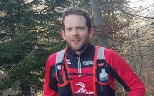
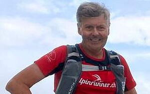
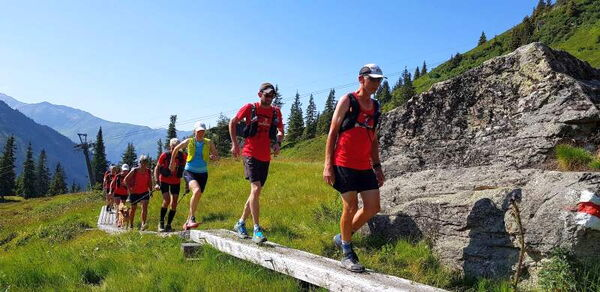

Alpinrunner
Lauftraining mit Michi und Martin
-

-

Sonntag, 15. August
Strecke: Klosters - Schlappin - Schlappinjoch - Madrisa - Rätschenjoch - Rätschenhorn - Saasser Calanda - Saaser Alp - Klosters
23 Km +/-1900 hm zur Strecke auf Schweiz Mobil
